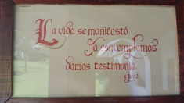

La experiencia artística y espiritual de Magdalith al servicio del canto litúrgico.
El 14 de septiembre de 2013 regresaba al Padre Magdalith, que ejerció un papel primordial en la elaboración de la liturgia de los Hermanos y de las Hermanas de San Juan. Nacida en 1932 en el seno de una familia judía en el sur de Francia, Magdalena Lipszyc se convirtió al catolicismo en 1951, atraída por la Eucaristía, sin renunciar a su origen, como afirmará años después: “Esta elección divina permanece para siempre, porque los dones de Dios son irrevocables (cf. Ro 11, 9). Cada judío lleva la imprenta indeleble de eso.”
Magdalith tenía una sensibilidad a flor de piel, agudizada por dolorosas pruebas: la subida del antisemitismo culminando con la ejecución de su papá por manos de los Nazis cuando ella tenía apenas 12 años, una vida matrimonial y una carrera artística difíciles, una salud precaria. Por otro lado estaba dotada de grandes talentos musicales, entre otros la voz, y muy versada en la teología judía y católica. Las circunstancias la llevaron así a emprender un proyecto de reforma del canto gregoriano, alentada en eso por el llamado del Concilio Vaticano II1. Como decía el padre Marie-Dominique Philippe, nuestro fundador: “Magdalith nos inspira, nos permite un renuevo, un estallo nuevo, un descubrimiento en el misterio de la Palabra de Dios, y de poner todo al servicio de la Palabra de Dios.”
Para acercarse a su obra, un hermano de San Juan2 nos propone seguir los caminos que ella misma siguió: los de la Revelación. En esos caminos, tres faros nos pueden iluminar: la carne, la palabra, el soplo.
La carne
La revelación en la primera así como en la nueva Alianza es esencialmente carnal, “encarnacional”. Los preceptos de la Torá y de la tradición judía están allí para transformar el conjunto de la vida del hombre en una liturgia, una experiencia de encuentro.
“En el principio”, el Génesis nos hace escuchar el grito de alegría del primer hombre al encuentro de la mujer: “ésta es carne de mi carne” (2, 23). A la alborada del Nuevo Testamento, el cuarto evangelio proclama: “El Verbo se hizo carne y puso su tienda en medio de nosotros” (1, 14). La carne se vuelve entonces el lugar, el camino ineludible del encuentro con Dios. De allí viene para Magdalith la primera cualidad de una voz litúrgica: debe ser encarnada. “Traqueal y no colocada”, dirá ella a su manera, es decir en la prolongación de la voz hablada.
Los Salmos, como lo volveremos a decir, son característicos de la dimensión encarnada y litúrgica de cualquier existencia humana. A ese respecto, el salmo 21 es particularmente significativo. El salmista empieza lanzando su grito hacia Dios: “¿Por qué me has abandonado?”. No obstante, en el corazón de la miseria, se acuerda que Dios tiene su trono en la alabanza de Israel y el poema bíblico sigue con una alternancia entre la queja del salmista y su confianza en Adonaí, hasta que la Palabra del Eterno haga brotar la alabanza: “Me contestaste y proclamaré tu Nombre delante de mis hermanos”. Así, es toda la vida concreta del narrador que se vuelve alabanza a Dios: miseria, memoria, llamada confiada y respuesta divina. El grito lleva a la alabanza, la adoración al silencio.
Carne transfigurada – carne “atravesada” hubiera dicho Magdalith – tal es el itinerario que nos propone el misterio pascual: no un rechazo a la muerte y al sufrimiento sino una travesía – la del Mar Rojo – que vuelve a iniciar cada generación. Y el misterio pascual es para el cristiano, en pos del pueblo de Israel, el lugar de su nacimiento, el lugar primordial del encuentro con Dios y de toda liturgia.
La Palabra
La primera Alianza está sellada en la Palabra. En el Monte Sinaí, el Señor da sus diez Palabras, devarim3. Esas se vuelven el camino, la norma y el medio del encuentro del Pueblo con su Dios. En respuesta al don de la torá, Israel deberá “guardar” y “practicar” la Palabra. La idolatría no consistirá primero en hacer estatuas de madera, sino en apartarse de la Palabra. En este sentido, todo canto realmente religioso, es decir según la etimología, ligando, deberá tener su raíz en ella.
En el corazón de la Alianza encontramos el canto revelado y litúrgico por excelencia: los Salmos. Corazón de la oración judía que la tradición de Israel ofreció a la Iglesia, los tehilim son poemas que llevan la voz de los hombres hacia Dios: sus gritos, sus miserias, sus derelicciones, sus gozos, sus acciones de gracia o sus alabanzas. A través de los Salmos, es toda la vida del hombre que sube hacia Dios y se hace oración. No obstante, estas palabras del hombre, una vez recibidos en la tradición sagrada de Israel, como del cristianismo, están consideradas como Palabra de Dios. ¡Qué maravilla pensar que Dios toma y transfigura la palabra del hombre para decirse a sí mismo!
La composición de Magdalith resalta los múltiples aspectos de la experiencia humana y espiritual contenida en los Salmos. La música seguirá el camino de la palabra, evitando encerrarla en una melodía y un ritmo que están exteriores a ella. El canto será una manera de echar el grito que la palabra sola no puede expresar: grito de desamparo, grito de alabanza. De allí, el carácter no uniforme de la cantilación (lectura casi declamada sobre un ámbito melódico reducido para enfatizar el texto) de los Salmos. Se encontrará a veces algo de rudo en la melopea (entonación rítmica con que puede recitarse algo en verso o en prosa), una dimensión atormentada. Todo ello es para el artista la condición para “dar una voz a su alabanza” (Leer el Salmo 65).
El Soplo: redescubrimiento del canto gregoriano
La Palabra, al venir de Dios, posee una característica ineludible: es viva. Lo propio del Dios de Israel es que viva y que actúe, a la diferencia de los ídolos. El soplo de Adonaí reina sobre el tohu wabohu original para darle orden, determinación y vida. De la misma manera, el profeta Ezequiel profetiza sobre el soplo (ruah) para que venga a dar vida a los huesos secos del Pueblo de Israel (cf. 37, 5). Es en este soplo que los primeros discípulos de Cristo son enviados y que encuentran la fuerza de proclamar las alabanzas de Dios (cf. Jn 20, 22).
Para Magdalith, el gregoriano es “el canto del soplo”. Volviendo a la liturgia sinagogal, donde el valor de las notas no era igual, buscó restituir a la salmodia su vida y su identidad inicial, para volver a darle su soplo y su ímpetu primordial y toda la fluctuación de su movimiento libre y ordenado. Insiste que el ritmo no es tanto mensurado como vital, que es un encuentro entre el ritmo del texto y el de la respiración de los cantores, con una alternancia de impulsos y de reposos. ¿Acaso la vida no se caracteriza por la alternancia del brote y del reposo?
Y lo ilustra con otra alternancia, usando una imagen que saca de la caligrafía, entre los “plenos” (los trazos gruesos) que dejan a las notas bajas toda su fuerza y su estabilidad, y los “desligados” (los trazos finos) que afinan las notas altas.
Esta doble alternancia de impulsos y de reposos por un lado, y de plenos y de desligados del otro, contribuye a manifestar el valor esencial del canto sagrado: el silencio. Toda liturgia, y especialmente la de los monjes, nace del silencio de la oración y conduce a ello. Tal es la grandeza del canto gregoriano al cual Magdalith quiso devolver su fuerza.
Conclusión
Dios es fuente, es UNO4 y nos llama. Según Magdalith, solamente un canto monódico (a una sola voz), llamado “canto de la fuente” podrá llevarnos a él. Eso requiere una ascesis, una purificación de nuestra sensibilidad. ¿Dónde encontrar el arquetipo, el modelo original y primario, de este canto?
¡En el Magnificat de María! Por ser inmaculada, la Virgen Madre es perfectamente disponible a la Palabra. Entregándose al soplo del Espíritu, lleva el Verbo en su carne. Entonces, en el encuentro con Isabel, es su ser entero que exulta “en Dios su Salvador”. La palabra guardada por María se vuelve palabra rezada y encuentra en esta alabanza un ímpetu y un soplo nuevos: él de la alegría de la Encarnación.
Y se anticipa a la vez la Cruz y su despojamiento: María, de pie, firme en su fe, victoriosa en su esperanza pobre, y ardiendo de caridad: “He allí a tu Madre”.
1. Sacrosanctum Concilium, 4 diciembre 1963 (primer documento del Concilio a ser aprobado por los Padres) 1↩
2. Traducción de un artículo del P. Gonzague, en la revista Lettre aux Amis de la Famille Saint-Jean, Enero 2015↩
3. Conviene anotar que davar significa a la vez Palabra, cosa y acontecimiento.↩
4. “Tengo un solo Señor, el Dios de Israel, el Adonaí de Miriam, el Padre de Yeshua”, de su Testamento espiritual, 2011.↩